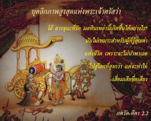
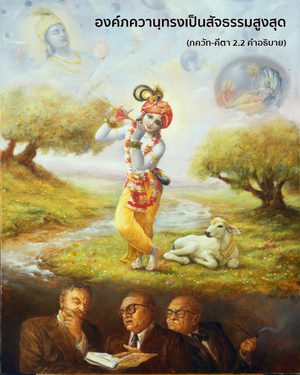
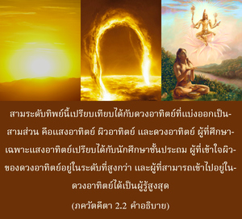
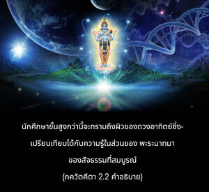
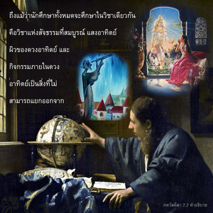

บุคลิกภาพสูงสุดแห่งพระเจ้าตรัสว่า โอ้ อรฺชุน ที่รัก มลทินเหล่านี้เกิดขึ้นต่อเธอได้อย่างไร มันไม่เหมาะสำหรับผู้ที่รู้คุณค่าแห่งชีวิตอย่างยิ่ง เพราะจะไม่นำพาเธอไปสู่โลกที่สูงกว่าแต่จะทำให้เสื่อมเสียชื่อเสียง





องค์กฺฤษฺณ และบุคลิกภาพสูงสุดแห่งพระเจ้าทรงเป็นบุคคลเดียวกัน ดังนั้น ใน ภควัท-คีตา ทั้งเล่มทรงเรียกพระองค์ว่า ภควานฺ องค์ภควานฺทรงเป็นสัจธรรมสูงสุด การรู้แจ้งสัจธรรมอันสมบูรณ์นี้เข้าใจได้ในสามระดับคือ พฺรหฺมนฺ หรือดวงวิญญาณอันไร้รูปลักษณ์ที่แผ่กระจายอยู่ทั่วไป ปรมาตฺมา หรือพระผู้เป็นเจ้าผู้ทรงประทับอยู่ภายในหัวใจของมวลชีวิต และ ภควานฺ หรือบุคลิกภาพสูงสุดแห่งพระเจ้าองค์ศฺรีกฺฤษฺณ ใน ศฺรีมทฺ-ภาควตมฺ (1.2.11) ได้อธิบายแนวคิดแห่งสัจธรรมที่สมบูรณ์ไว้ดังนี้
วทนฺติ ตตฺ ตตฺตฺว-วิทสฺ
ตตฺตฺวํ ยชฺ ชฺญานมฺ อทฺวยมฺ
พฺรเหฺมติ ปรมาตฺเมติ
ภควานฺ อิติ ศพฺทฺยเต
“ผู้รู้แจ้งสัจธรรมที่สมบูรณ์จะเข้าใจได้ในสามระดับ ซึ่งมีความคล้ายคลึงกัน คือ พฺรหฺมนฺ ปรมาตฺมา และ ภควานฺ”
ระดับทิพย์สามระดับนี้เปรียบเทียบได้กับดวงอาทิตย์ที่แบ่งออกเป็นสามส่วนคือ แสงอาทิตย์ ผิวอาทิตย์ และดวงอาทิตย์ ผู้ที่ศึกษาเฉพาะแสงอาทิตย์ คือ นักเรียนชั้นประถม ผู้ที่เข้าใจผิวของดวงอาทิตย์อยู่ในระดับที่สูงกว่า และผู้ที่สามารถเข้าไปอยู่ในดวงอาทิตย์ได้นั้นเป็นผู้รู้สูงสุด นักศึกษาทั่วไปที่พอใจกับการเข้าใจเฉพาะแสงอาทิตย์ที่สาดส่องรัศมีไปทั่วจักรวาลอย่างเจิดจรัส ซึ่งเป็นธรรมชาติที่ไร้รูปลักษณ์เปรียบเทียบได้กับผู้รู้แจ้งเฉพาะในส่วนของ พฺรหฺมนฺ แห่งสัจธรรมที่สมบูรณ์โดยส่วนเดียว นักศึกษาขั้นสูงกว่านี้จะทราบถึงผิวของดวงอาทิตย์ซึ่งเปรียบเทียบได้กับความรู้ในส่วนของ ปรมาตฺมา ของสัจธรรมที่สมบูรณ์ และนักศึกษาผู้ที่สามารถเข้าไปถึงใจกลางดวงอาทิตย์เปรียบเทียบได้กับผู้รู้แจ้งรูปลักษณ์แห่งสัจธรรมที่สมบูรณ์สูงสุด ดังนั้น ภกฺต หรือนักทิพย์นิยมผู้รู้แจ้งในส่วนขององค์ภควานฺแห่งสัจธรรมที่สมบูรณ์ถือว่าเป็นนักทิพย์นิยมชั้นสูงสุด ถึงแม้ว่านักศึกษาทั้งหมดจะศึกษาในวิชาเดียวกัน คือ วิชาแห่งสัจธรรมที่สมบูรณ์ แสงอาทิตย์ ผิวของดวงอาทิตย์ และกิจกรรมภายในดวงอาทิตย์เป็นสิ่งที่ไม่สามารถแยกออกจากกันได้ แต่นักศึกษาทั้งสามกลุ่มก็ไม่ได้อยู่ในระดับเดียวกัน
คำว่า ภควานฺ ในภาษาสันสกฤต ได้รับการอธิบายโดย ปราศร มุนิ ผู้ที่เชื่อถือได้ และเป็นพระบิดาของ วฺยาสเทว ว่าบุคลิกภาพสูงสุดผู้ทรงเป็นความมั่งคั่งในความร่ำรวยทั้งหมด พลังอำนาจทั้งหมด ชื่อเสียงทั้งหมด ความสง่างามทั้งหมด วิชาความรู้ทั้งหมด และความเสียสละทั้งหมด ผู้ที่มีคุณสมบัติทั้งหมดนี้ได้ชื่อว่าเป็นองค์ภควานฺ มีมนุษย์หลายคนที่ร่ำรวยมาก มีอำนาจมาก มีความสง่างามมาก มีชื่อเสียงมาก มีความรู้มาก และไม่ยึดติด แต่ไม่มีใครที่สามารถอ้างได้ว่าตนเองเป็นเจ้าของแห่งความร่ำรวยทั้งหมด พลังอำนาจทั้งหมด องค์ศฺรีกฺฤษฺณเพียงพระองค์เดียวเท่านั้นที่สามารถตรัสเช่นนี้ได้ เพราะว่าพระองค์ทรงเป็นบุคลิกภาพสูงสุดแห่งพระเจ้า ไม่มีสิ่งมีชีวิตใดรวมทั้งพระพรหม พระศิวะ หรือพระนารายณ์ ที่จะสามารถเป็นเจ้าแห่งความมั่งคั่งอย่างสมบูรณ์เท่ากับองค์กฺฤษฺณได้ ดังนั้นพระพรหมทรงสรุปใน พฺรหฺม-สํหิตา ว่า องค์กฺฤษฺณทรงเป็นบุคลิกภาพสูงสุดแห่งพระเจ้า ไม่มีผู้ใดเสมอเหมือน และไม่มีผู้ใดยิ่งใหญ่ไปกว่าพระองค์ ทรงเป็นพระผู้เป็นเจ้าองค์แรก หรือองค์ภควานฺที่ทราบกันในอีกพระนามหนึ่งว่า โควินฺท ผู้ทรงเป็นแหล่งกำเนิดสูงสุดของแหล่งกำเนิดทั้งปวง
อีศฺวรห์ ปรมห์ กฺฤษฺณห์
สจฺ-จิทฺ-อานนฺท-วิคฺรหห์
อนาทิรฺ อาทิรฺ โควินฺทห์
สรฺว-การณ-การณมฺ
“มีบุคลิกภาพมากมายผู้เป็นเจ้าของคุณสมบัติแห่งองค์ภควานฺ แต่องค์กฺฤษฺณทรงเป็นบุคลิกภาพที่สูงสุด เพราะว่าไม่มีผู้ใดเหนือไปกว่าพระองค์ พระองค์คือบุคคลสูงสุด และพระวรกายของพระองค์ทรงเป็นอมตะ เปี่ยมไปด้วยความรู้ และความสุขเกษมสำราญ พระองค์ทรงเป็น โควินฺท ภควานฺ องค์แรก และเป็นแหล่งกำเนิดของแหล่งกำเนิดทั้งปวง” (พฺรหฺม-สํหิตา 5.1)
ใน ภาควต ก็มีพระนามของบุคลิกภาพสูงสุดแห่งพระเจ้ามากมายเช่นกัน แต่ได้อธิบายไว้ว่า ศฺรี กฺฤษฺณ ทรงเป็นองค์แรกของบุคลิกภาพแห่งพระเจ้า และจากองค์กฺฤษฺณจึงมีอวตารแห่งองค์ภควานฺมากมายที่ทรงแบ่งภาคออกมา
เอเต จำศ-กลาห์ ปุํสห์
กฺฤษฺณสฺ ตุ ภควานฺ สฺวยมฺ
อินฺทฺราริ-วฺยากุลํ โลกํ
มฺฤฑยนฺติ ยุเค ยุเค
“รายพระนามของอวตารต่าง ๆ ขององค์ภควานฺที่เสนอไว้ ณ ที่นี้ ทั้งหมดนั้นเป็นภาคที่แบ่งแยกมาจากพระองค์ หรือเป็นส่วนของภาคที่แบ่งแยกมาจากพระองค์ แต่องค์กฺฤษฺณทรงเป็นบุคลิกภาพสูงสุดแห่งพระเจ้าพระองค์เอง” (ภาควต 1.3.28)
ฉะนั้น องค์กฺฤษฺณทรงเป็นบุคลิกภาพสูงสุดแห่งพระเจ้าองค์แรก ทรงเป็นสัจธรรมที่สมบูรณ์ และทรงเป็นแหล่งกำเนิดของทั้ง ปรมาตฺมา และ พฺรหฺมนฺ ที่ไร้รูปลักษณ์
ความเศร้าโศกเสียใจของ อรฺชุน ที่ทรงมีต่อบรรดาสังคญาติเป็นสิ่งที่ไม่น่าจะเกิดขึ้นต่อหน้าพระพักตร์ของบุคลิกภาพสูงสุดแห่งพระเจ้า ดังนั้น องค์กฺฤษฺณจึงทรงแสดงความประหลาดใจให้กับอรฺชุน ด้วยการกล่าวคำว่า กุตห์ “มาจากไหน” มลทินเหล่านี้ไม่ควรเกิดขึ้นกับผู้ที่อยู่ในชนชั้นที่มีอารยธรรม ซึ่งได้ชื่อว่าเป็นชาวอารฺยนฺ คำว่า อารฺยนฺ ใช้กับผู้ที่ทราบถึงคุณค่าแห่งชีวิต และมีอารยธรรมอยู่บนฐานความรู้แจ้งแห่งดวงวิญญาณ ผู้ที่ถูกแนวความคิดทางวัตถุนำทางจะไม่ทราบถึงจุดมุ่งหมายของชีวิตว่าการรู้ถึงสัจธรรมที่สมบูรณ์คือ องค์วิษฺณุ หรือองค์ภควานฺ และจะถูกยั่วยวนจากสิ่งต่าง ๆ ภายนอกของโลกวัตถุ ดังนั้นจึงจะไม่ทราบว่าอะไรคือความหลุดพ้น ผู้ที่ไม่มีความรู้เกี่ยวกับความหลุดพ้นจากพันธนาการทางวัตถุเรียกว่าอนารยชน ถึงแม้ว่า อรฺชุน ทรงเป็น กฺษตฺริย แต่พระองค์ทรงหลีกเลี่ยงหน้าที่ทั้งหมดด้วยการปฏิเสธที่จะสู้รบ การกระทำด้วยความขลาดเช่นนี้เหมาะสำหรับอนารยชน การละเลยจากหน้าที่เช่นนี้จะไม่ช่วยให้เราเจริญก้าวหน้าในชีวิตทิพย์ และจะไม่เปิดโอกาสให้เราได้มีชื่อเสียงที่ดีงามในโลกใบนี้ด้วยซำ้ องค์ศฺรีกฺฤษฺณทรงไม่เห็นด้วยกับความเมตตาสงสารที่ อรฺชุน ทรงมีต่อสังคญาติของเขา